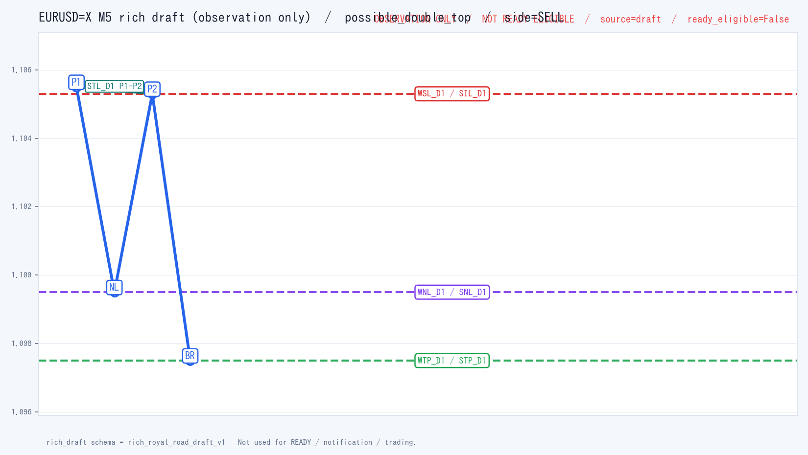

Draft chart

Image carries an "OBSERVATION ONLY / NOT READY ELIGIBLE / source=draft / ready_eligible=False" banner. Lines: P1/NL/P2/BR (or B1/NL/B2/BR), WNL_D1/WSL_D1/WTP_D1, SNL_D1/SIL_D1/STP_D1/STL_D1.
Safety flags
| decision.level | SUPPRESSED |
|---|---|
| safety.ready_allowed | False |
| safety.dispatch_called | False |
| rich_draft.ready_eligible | False |
| rich_draft.p0_pass | False |
| summary.used_for_ready | False |
| summary.used_for_notification | False |
| summary.offline_analysis_only | True |
Snapshot summary
| symbol | EURUSD=X |
|---|---|
| timeframe | M5 |
| source | csv:/home/user/fx-royal-road-monitor/tests/fixtures/ohlc_preview_sample.csv |
| candles | 25 |
| last_close | 1.102 |
| rich_draft.pattern_kind | possible_double_top |
| rich_draft.wave_lines | 3 |
| rich_draft.structural_lines | 4 |
| rich_draft.sr_zones | 0 |
| rich_draft.trendlines | 1 |
| rich_draft.ready_eligible | False |